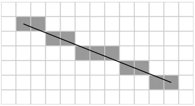

Aliasing is a side effect that happens when a digital sampler samples real-world information and attempts to digitize it. For example, when you sample audio or video, aliasing means that the shape of the digital signal doesn’t match the shape of the original signal. This means when Unity renders a line, it may appear jagged as the pixels don’t align perfectly with the line’s intended path across the screen.

To prevent aliasing, the Universal Render Pipeline (URP) has multiple methods of anti-aliasing, each with their own effectiveness and resource intensity.
The anti-aliasing methods available are:
FXAA uses a full screen pass that smooths edges on a per-pixel level. This is the least resource intensive anti-aliasing technique in URP.
To select FXAA for a Camera:
Note: For anti-aliasing on mobile platforms, Unity recommends that you use FXAA.
SMAA finds patterns in the borders of an image and blends the pixels on these borders according to the pattern it finds. This anti-aliasing method has much sharper results than FXAA.
To select SMAA for a Camera:
TAA uses frames from a color history buffer to smooth edges over the course of multiple frames. Because TAA calculates its effects over time, it often creates ghosting artifacts in extreme situations, such as when a GameObject moves quickly in front of a surface that contrasts with it. TAA uses motion vectors.
To select TAA for a Camera:
The following features cannot be used with TAA:
MSAA samples the depth and stencil values of every pixel and combines these samples to produce the final pixel. Crucially, MSAA solves spatial aliasing issues and is better at solving triangle-edge aliasing issues than the other techniques. However, it does not fix shader aliasing issues such as specular or texture aliasing.
MSAA is more resource intensive than other forms of anti-aliasing on most hardware. However, when run on a tiled GPU with no post-processing anti-aliasing or custom render features in use, MSAA is a cheaper option than other anti-aliasing types.
MSAA is a hardware anti-aliasing method. This means you can use it with the other methods, as they are post-processing effects. However, you can’t use MSAA with TAA.
To enable MSAA:
For more information on the available settings, refer to the MSAA setings in the URP asset.
Note: On mobile platforms that don’t support the StoreAndResolve store action, if Opaque Texture is selected in the URP Asset, Unity ignores the MSAA property at runtime (as if MSAA is set to Disabled).